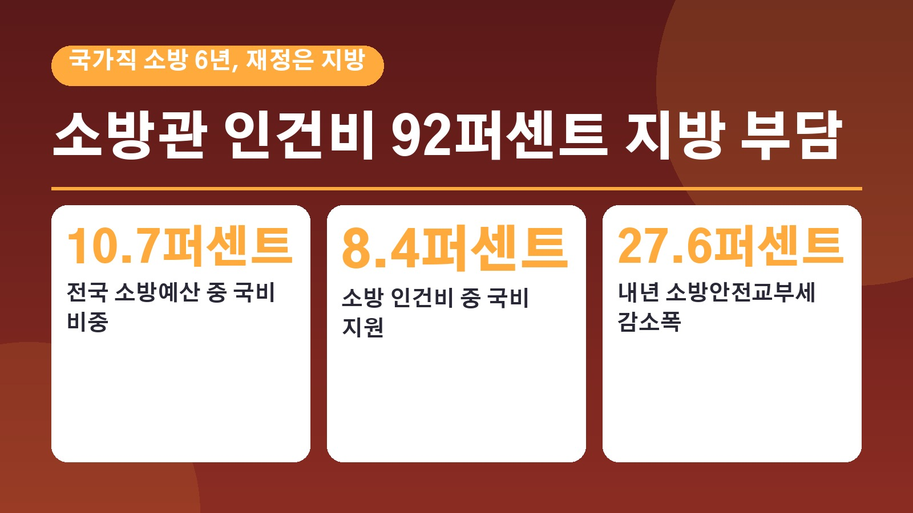
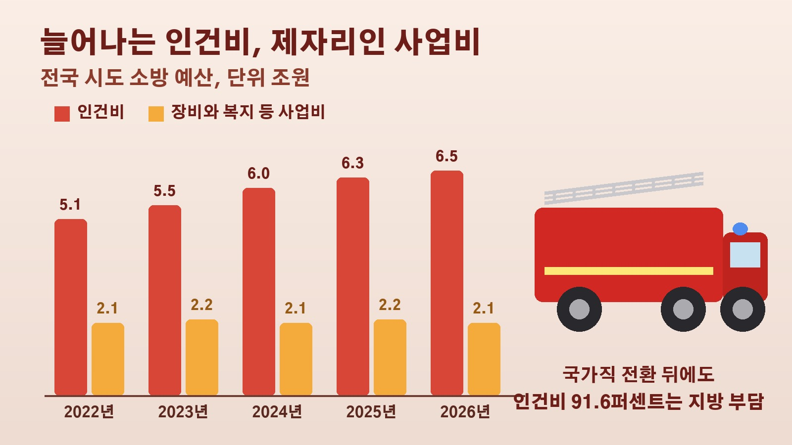

국가직 된 지 6년인데 소방관 인건비 92퍼센트는 지방이 낸다, 재정 빨대 발언 뒤에 가려진 소방 예산 구조와 내년 교부세 27.6퍼센트 감소

소방관은 국가공무원이라고 들었는데 왜 도지사가 소방 예산 때문에 골치가 아프다고 했을까, 고개를 갸웃하신 분들 계실 거예요. 최근 경기도 국정감사에서 나온 재정 빨대 발언이 큰 논란이 됐는데, 그 표현 뒤에는 소방관 신분은 국가가 맡고 돈은 지방이 대부분 내는 오래된 구조가 있습니다. 발언이 어떻게 나왔는지부터 소방 예산이 실제로 어떻게 짜여 있는지, 지역마다 소방관 처우가 왜 다른지, 앞으로 무엇이 쟁점인지 차례로 정리해 볼게요.
재정 빨대 발언, 무슨 말이었고 왜 사과했나
추미애 경기도지사는 13일 국회 행정안전위원회의 경기도 국정감사에서 지방 재정과 국가직 소방공무원 예산을 이야기하다 소방이 가장 큰 골치 아픈 재정 빨대 같다고 말했어요. 경기도 소방 인건비가 1조 1천억 원 정도인데 정부 지원은 800억 원뿐이라 가장 힘든 부분이라는 취지였다고 나중에 설명했습니다.
소방관들의 반발은 컸어요. 공교롭게도 16일 경기 부천의 공장 화재 현장에 먼저 투입된 김진석 소방위가 불길에 고립됐다가 구조됐지만 17일 끝내 숨졌습니다. 이 화재로 다른 소방관 5명도 다쳤어요. 추 지사는 17일 빈소를 찾은 뒤 의도와 다르게 전달됐다면 깊이 유감을 표하고 사과드린다며 소방관을 폄훼할 의도는 전혀 없었다고 밝혔습니다. 고인의 영결식은 19일 경기도청장으로 치러졌어요. 올해 화재 현장에서 순직한 소방관은 김 소방위를 포함해 4명입니다.
신분은 국가직, 월급은 지방이 내는 구조
소방공무원은 2020년 4월 지방직에서 국가직으로 바뀌었어요. 지역마다 다른 소방 서비스 격차를 줄이고 처우를 높이자는 취지였습니다. 그런데 바뀐 것은 사실상 신분이었어요. 화재 진압과 구조, 구급은 지방자치법상 시도가 맡는 일로 남았고, 시도지사가 인사권 일부와 지휘 감독권을 그대로 갖고 있습니다. 예산도 지방재정법에 따라 지방이 부담하도록 했고요.
숫자로 보면 더 분명해요. 경기도 등에 따르면 올해 전국 17개 시도 소방본부 예산은 8조 5967억 원인데, 이 가운데 지방비가 7조 6728억 원으로 89.3퍼센트이고 국비는 9239억 원으로 10.7퍼센트입니다. 인건비만 보면 올해 본예산 기준 6조 5129억 원 가운데 국비인 소방안전교부세 지원은 5496억 원, 8.4퍼센트에 그쳐요. 나머지 91.6퍼센트를 지방이 내는 셈이라 국가직 소방관 월급의 92퍼센트를 지방이 준다는 말이 나오는 겁니다.
한국정책학회 분석으로는 소방 업무 가운데 국가 사무 성격이 43퍼센트, 국가와 지방이 함께 맡을 공동 사무가 23퍼센트, 지방 사무가 34퍼센트였어요. 국가가 책임을 나눠야 할 몫이 66퍼센트인데 국비 비중은 10퍼센트 남짓이라는 점을 경기도는 문제로 들고 있습니다. 경기도만 놓고 보면 올해 소방 인건비 1조 1570억 원 가운데 국비는 800억 원이고 1조 770억 원, 93.1퍼센트를 도가 부담해요.
늘어나는 인건비, 제자리인 장비와 처우 예산
왜 이런 차이가 커졌을까요. 정부는 국가직 전환을 앞둔 2019년, 소방 인력을 늘리는 데 드는 인건비 일부를 국비로 돕기로 하고 담배에 붙는 개별소비세 가운데 지방에 나눠 주는 소방안전교부세 몫을 20퍼센트에서 45퍼센트로 높였어요. 그런데 소방관 수가 늘고 호봉과 직급이 오르면서 지난해 인건비 예산은 2019년의 약 1.7배가 됐습니다. 국비 지원은 담배 세수에 따라 정해질 뿐 인건비가 늘어나는 만큼 따라 늘어나는 장치는 없었어요.
그 결과 반드시 나가야 하는 인건비가 다른 예산을 밀어내고 있습니다. 경기도가 정리한 자료를 보면 전국 소방 인건비는 2022년 5조 1천억 원에서 올해 6조 5천억 원으로 꾸준히 늘었지만, 장비 보강과 차량 교체, 복지 등에 쓰는 사업비는 같은 기간 2조 1천억 원에서 2조 2천억 원 사이에 머물렀어요. 국가가 주도한 충원도 부담을 키웠습니다. 정부는 2017년부터 2022년까지 전국에서 소방공무원 약 2만 명을 늘렸고, 추 지사는 앞으로 늘어날 인력 가운데 40퍼센트 정도인 3200명이 경기 소방에 배정될 예정이라고 말했어요.

지역마다 다른 처우, 신발과 피복비와 퇴직 후 검진
지방 재정에 기대다 보니 같은 국가직인데도 사는 지역에 따라 처우가 달라요. 국회입법조사처가 올해 1월 낸 보고서를 보면 지난해 소방관 1인당 피복비는 가장 적은 부산과 제주, 가장 많은 울산 사이에 3배 가까운 차이가 났고, 1인당 위탁 교육비는 부산과 충북 사이 격차가 10배를 넘었습니다.
현장의 목소리도 구체적이에요. 전국공무원노동조합 소방본부 경남지부장은 경향신문과의 통화에서 서울은 산악구조용 신발을 지급하지만 재정이 넉넉지 않은 지역에서는 대원들이 사비로 사거나 등산에 맞지 않는 신발을 신고 구조에 나섰다가 발목을 다치는 일이 많다고 했어요. 화재 현장에서 유해물질에 노출된 소방관이 퇴직한 뒤 받는 건강검진도 지역마다 다릅니다. 경북은 퇴직 소방관이 10년 동안 특수건강검진을 받도록 전국에서 처음 지원을 시작했지만, 관련 조례가 없는 지역도 많다고 해요.
내년 소방안전교부세 27.6퍼센트 감소와 재원 논쟁
앞으로가 더 걱정이라는 목소리도 나옵니다. 정부는 내년 소방안전교부세를 올해 약 1조 500억 원보다 27.6퍼센트, 약 2900억 원 줄어든 7605억 원으로 편성했어요. 기획예산처는 올해 교부세에 들어 있던 약 1100억 원의 추가 정산분이 내년에는 빠지고 담배 개별소비세 수입도 줄어들 것으로 예상되기 때문이라고 설명했습니다. 담배 개별소비세의 나머지 55퍼센트는 내년부터 지역필수의료 특별회계에 쓰도록 법으로 정해져 있어, 소방 몫을 늘리려면 관련 법도 함께 손봐야 하는 상황이에요.
다른 재원을 찾자는 제안도 막혀 있습니다. 담배소비세에 붙는 지방교육세는 연간 약 1조 5천억 원 규모인데, 경기도와 행정안전부 등은 올해 말 과세 시한이 끝나면 이를 소방용 지역자원시설세로 돌려 소방 인건비 등에 쓰자고 건의했어요. 하지만 정부는 이 세금을 내년부터 지방주거복지세로 바꿔 공공주택 공급과 주거 여건 개선에 쓰는 법 개정을 추진하고 있습니다.
책임을 두고는 시각이 엇갈려요. 중앙정부 쪽에서는 시도지사들이 홍보 효과가 큰 사업에 예산을 몰아주고 소방 투자에는 소홀했다는 지적이 나오고, 전문가들 사이에서는 국가직 전환에 맞춰 예산과 인사 체계도 바꿨어야 했다는 목소리가 나옵니다. 국회입법조사처는 인건비를 국비로 지원하는 체계를 강화하고, 그만큼 생긴 지자체 재정 여력은 노후 장비 교체와 청사 현대화 같은 소방 서비스 개선에 쓰이도록 해야 한다고 제안했어요. 소방청은 인건비의 국가 분담과 관련해 국가 책임을 강화하는 방향으로 관계 부처, 국회와 논의하겠다고 밝혔습니다.
정리하면 소방관은 6년 전 국가공무원이 됐지만 인건비의 90퍼센트 이상과 소방 예산의 89.3퍼센트는 여전히 시도가 내고 있고, 내년에는 국비 재원인 소방안전교부세마저 줄어듭니다. 지금 국회의 예산 심사 과정에서 이 구조를 손볼 해법이 나올지, 그리고 그 결과가 현장 소방관의 장비와 안전으로 이어질지 지켜볼 필요가 있어요.
참고한 기사: 경향신문 재정 빨대 발언 뒤에 가려진 소방 국가직화, 소방관들 이제는 진짜 바꿔야 2026년 10월 20일, 한국경제 이름만 국가직, 소방관 월급 92퍼센트는 여전히 지방이 낸다 2026년 10월 20일, 한겨레 국가직 소방, 재정은 지방, 빨대 충격파에 드러난 이중 구조 2026년 10월 19일, 연합뉴스 추미애, 재정 빨대 발언 사과 2026년 10월 17일, 경인일보 소방은 재정 빨대 발언에 소방노조 반발 2026년 10월 14일, 대한민국 정책브리핑 소방청 설명자료 2026년 3월 13일
태그
소방국가직 소방예산 소방관인건비 소방안전교부세 재정빨대 소방관처우 국가직전환6년 지역자원시설세 순직소방관 소방재정